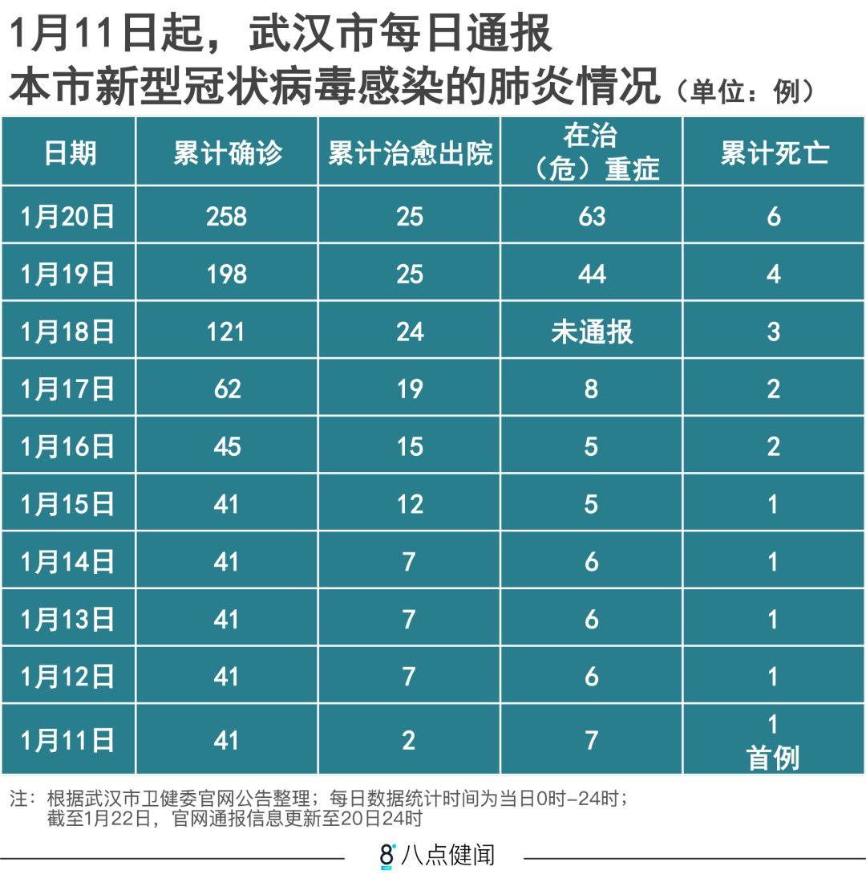

武汉肺炎疫情更新：15名医务人员感染，全国累计218例确诊
原文链接 备份链接 截至20日晚上20点，境内累计确诊新型冠状病毒感染肺炎病例218例，疑似病例7例，死亡4例，治愈出院25例。 武汉共有15名医务人员确诊为新型冠状病毒感染的肺炎病例，另有1名为疑似病例。 国家卫健委高级别专家组组 …


截至1月21日24时，13个省（区、市）累计报告新型肺炎确诊病例440例。
专家认为，1月18日以来确诊病例迅速增加，有疫情由“一代病例”转为“二代病例”的因素。
此次冠状病毒肺炎疫情传播，可明确是二代病例的，迄今已有广东、武汉、上海三地通报。
国家卫健委、国家医保局都采取了相应措施，应对疫情。
为防止疫情扩散，武汉对进出人员启动严格管控。
1月22日凌晨，湖北省政府宣布启动突发公共卫生事件二级应急响应。

1月22日上午10时，国务院新闻办举行新闻发布会，公布新型冠状病毒肺炎的最新疫情：
截至1月21日24时，国家卫健委收到13个省（区、市）累计报告新型冠状病毒感染的肺炎确诊病例440例，报告死亡病例累计9例，新增3例，全部为湖北病例。其中，1月21日当天（0-24时），报告新增冠状病毒感染的肺炎确诊病例149例（详细数据见文末）。
自2019年12月31日武汉市卫健委首次通报肺炎疫情病例以来，官方通报疫情病例迄今已超过20天。这期间，转折节点发生在2020年1月18日以后——确诊病例数迅速增加，由之前的41例增至440例；病例发生地也由武汉一地扩展至全国13个省份。
自1月18日至今，新型冠状病毒肺炎的确诊病例数、病发地的急剧增加，引发社会紧张情绪。当前公众的首要问题是，为何病例数在短短三四天内迅速增加扩大？
有疫情专家认为，1月18日以来的确诊病例迅速增加，既有病毒诊断速度加快、疫情通报机制改变的因素，也有疫情由“一代病例”转为“二代病例”的因素。
二代病例，简言之，就是指人传人的病例。如何防控二代病例，正是当前疫情防控的重心。
官方通报疫情病例第一阶段
此次疫情的官方病例通报经过了三个阶段。
第一阶段，是2019年12月31日至2020年1月5日，通报者是武汉市卫健委。
第一阶段的首次通报，是在2019年12月31日下午13时，武汉市卫健委披露“目前已发现27例（肺炎）病例”。
第一阶段的最后一次通报，是在2020年1月5日晚间8时，武汉市卫健委披露，截至1月5日8时，该市共报告“不明原因的病毒性肺炎诊断患者59例”。
在上述官方通报疫情病例的第一阶段，对于肺炎的病原并未确定，因此称为“不明原因的病毒性肺炎”。病例发生地点均在武汉市。
官方通报疫情病例第二阶段
官方通报疫情病例的第二阶段，是在1月11日-1月18日期间。通报者是武汉市卫健委。
在1月5日-1月11日期间，武汉市卫健委未有疫情病例通报。但在此期间，国家有关部门已确定此次肺炎为新型冠状病毒肺炎。
第二阶段的首次通报，是在1月11日晨7时，武汉市卫健委通报：截至1月10日24时，该市报告新型冠状病毒肺炎确诊病例41例。这个通报同时表示，自1月3日以来未发现新发病例。
此后，1月12日、13日、14日、15日、16日，武汉市卫健委每日均做病例通报。每次通报，均显示上一日的0-24时，该市无新增确诊病例。
由此，第二阶段的官方疫情病例报告，呈现出三个特征：其一，将此前的不明原因肺炎确定为新型冠状病毒肺炎；其二，这一阶段并无新增确诊病例，确诊病例数保持在41例；其三，所有病例均在武汉，外地尚未有病例通报。

△ 制图：吴晔婷
官方通报疫情病例第三阶段
官方通报疫情病例的第三阶段，始于1月18日凌晨零时10分，武汉市卫健委通报，1月16日当天新增确诊病例4例。这是自1月3日以来，武汉市第一次新增确诊病例。
1月19日凌晨零时43分，武汉市卫健委通报，1月17日当天新增确诊病例17例。
1月20日凌晨2时42分，武汉市卫健委通报，1月18日-1月19日两天，总计新增确诊病例136例。
1月20日凌晨2时44分，北京大兴区卫健委通报，该区确诊两例病例。
几分钟后，1月20日凌晨2时51分，广东省卫健委通报，该省确诊1例病例。
1月20日晚间，上海市卫健委通报，该市出现首例确诊病例。
1月21日，国家卫健委开始汇总、通报全国确诊病例数量：截至1月20日24时，收到国内四省（区、市）累计报告确诊病例291例（湖北省270例；北京市5例；广东省14例；上海市2例）。
截至1月22日上午10时国务院新闻办疫情通报，第三阶段官方疫情通报呈现出两个特点：其一，确诊病例数量快速增加，由第二阶段末的41例，快速增至440例（1月22日上午10时通报数据）；其二，病例发生地由武汉一地，扩展至13省。
人传人的“二代病例”已经出现
由此可见，此次冠状病毒肺炎疫情的近90%的确诊病例，是在官方通报疫情病例的第三阶段出现的，且大大超出武汉一地。
为什么？
这其中，一是有病毒检测速度加快的原因：约自1月中旬起，各地使用了新型的病毒检测试剂盒，病毒检测速度加快，由原来的一到两周左右，缩短至两到三天。
二是各地的报告机制有所调整：在1月20日之前，各地均等待国家卫健委确诊后才对外通报。1月20日之后，各地开始根据《国家卫生健康委办公厅关于印发新型冠状病毒感染的肺炎诊疗方案（试行第二版）》，自行确诊病例并自行公布，病例披露速度加快。
而在此前，各地最初通报的确诊病例，发病时间大多在一月初，确诊时间需要十几天。例如广东省通报的第一例冠状病毒感染性肺炎患者，2019年12月29日赴武汉探亲；2020年1月3日发病；1月4日返回深圳就诊；1月11日转院隔离；1月19日确诊；1月20日通报。
专家认为，这是因为新的检测标准和试剂没出来之前，流程问题导致的。首先，各地医院发现疑似病例后，要上报地方CDC。当地疾控中心检测后，再将样本运送至国家CDC，由国家CDC复核后，才能作病例确诊。
除了上述两个原因，当前，最令专家们担心的是，最近阶段的确诊病例快速增加，表明当前已有明显的“二代病例”出现。
所谓二代病例，是指病毒由传染源（本次疫情中，传染源在华南海鲜市场，传染源可能是野生动物）直接传染到人之后（此为一代病例），再由一代病例的感染者，通过人传人的渠道继续传染给新的感染者（二代病例）。
此次冠状病毒肺炎疫情传播，可能涉及二代病例的，迄今已有三地通报：
最早是广东。
广东省卫健委1月20日晚20时通报，当天广东省专家组根据《国家卫生健康委办公厅关于印发新型冠状病毒感染的肺炎诊疗方案（试行第二版）》，确认新增13例确诊病例，其中“11例病例均有武汉居住或旅行史，2例与病例有密切接触史”。这2例“与病例有密切接触史”者，即可能是由人传人的二代病例。
后据媒体报道，广东人传人病例中，其中1例发生在珠海：一对从武汉到珠海探亲的父母，把病毒传给了生活在珠海的女儿。
其次是武汉。
1月21日凌晨1时45分，健康武汉官微发布消息，通报已有15名医务人员确诊为新型冠状病毒肺炎。
1月21日晚，武汉市长周先旺在接受央视采访时进一步披露，武汉医务人员感染新型冠状病毒肺炎，发生在华中科技大学附属协和医院。传染源是该院脑神经外科的一位病人，在为这名病人手术期间，一名医生、13名护士被感染。
新型冠状病毒，在病人手术过程中，由病人传染给医护人员，也是人传人的二代病例。
再后是上海。
上海市卫健委21日发布消息，截至当晚19:00，上海新增4例新型冠状病毒感染的肺炎确诊病例。其中，3例有武汉居住史或旅行史，1例从密切接触者中发现。
这1例“从密切接触者中发现”者，同样表明是人传人的二代病例。
国家卫健委高级别专家组成员曾光认为，出现二代病例是疫情传播中的一个明显信号。但这是否表明病毒产生了变异，目前还无确切的证据。如果病毒产生变异，最严重的后果是，病毒更适应在人身上传播，造成更多的感染。
另一位不愿透露姓名的专家谈到，现在CDC只测了最初的一些病例，那些病例的病毒没有变异。现在当务之急是进行后发病例的基因组测序，以确定病毒是否出现变异。
上述专家认为，在2020年1月1日武汉的华南海鲜市场关闭后，不会再出现造访市场而被感染的可能。算上此次冠状病毒的潜伏期，可以大致推断，1月10号之后感染的病例，基本可以认定为二代病例，也即人传人的病例。
另一个值得警惕的信号是，国家卫健委高级别专家组组长、中国工程院院士钟南山在接受媒体采访时，不但提到病毒已具备人传人的能力，他最担心的是下一步出现“超级传播者”。
所谓超级传播者，是指具有极强的将病毒传染给他人的患者。1月21日武汉市市长披露的华中科技大学附属协和医院发生的传染病例中，14名医务人员被同一个病人传染。此名病人有可能就是“超级传播者”。
曾光认为，这说明人传人现象存在，但不说明每一例都有传染性。“这种情况的产生，有可能是病毒变异，也有可能是其它原因引起的，例如病毒传播到了人口稠密的地方，遇上易感群体，或者到了密闭接触的环境里。”
最初隔离人群中并无二代病例
曾光认为，我们此次关注并介入新型冠状病毒肺炎的防治时间点，和2003年的SARS疫情不一样。当年介入SARS的时候，时间已经比较晚了，所以SARS的演变过程呈现得比较完整。现在的新型冠状肺炎病毒，只能观测早期情况，所以不论是从流行病学还是临床观察，都将有一个过程。
2019年12月8日，首例不明原因肺炎患者在武汉出现。12月底，随着患者人数的增加，武汉市疾控部门意识到这是一场疫情，并将相关样本递交给国家CDC。2020年1月1日，在病毒基因序列尚未查清的情况下，武汉市采取行动，迅速对传染源华南海鲜市场进行关闭和消毒处理。另一方面，对患者的几百例密切接触人群进行了隔离控制。
上述专家谈到，华南海鲜市场关闭前一周，应该是病毒传染性最强的时期，算上病毒一周左右的潜伏期，在2020年1月10日前发病的病例，应该算一代病例，即这些患者因为直接暴露于华南海鲜市场而感染，并非被他人感染。
曾光谈到，在最初隔离的几百例人群里没有发现第二代病例。说明这个病毒初期的毒性并不强，人传人的能力比较差。一开始的感染都是环境暴露。
参与救治的临床医生也提到，最初病人的病情不是特别严重，发热不是特别高，这也说明病毒能力弱，和流行病学的观测是一致的。
联防联控，措施升级
近日，国家卫生健康委牵头成立应对新型冠状病毒感染的肺炎疫情联防联控工作机制，还向武汉派驻国家级医疗专家指导医疗救治工作，对重症病例实行“一人一案”，尽最大努力减少重症和死亡。
1月21日，国家医保局决定对确诊为“新型冠状病毒感染肺炎”等患者采取特殊报销政策。
一是将国家卫生健康委《新型冠状病毒感染的肺炎诊疗方案》覆盖的药品和医疗服务项目，全部临时纳入医保基金支付范围。
二是保证及时支付患者费用，特别是发挥医疗救助资金的兜底保障作用，打消患者就医顾虑。对异地就医患者先救治后结算，报销不再执行异地转外就医支付比例调减规定，减少患者流动带来的传染风险。
三是对集中收治的医院，医保部门将预付资金减轻医院垫付压力，患者医疗费用不再纳入医院总额预算控制指标。
1月21日晚，交通运输部表示，交通运输部和国家铁路局、中国民航局及中国国家铁路集团有限公司决定，对选择铁路、公路、水路、民航等交通出行方式的旅客，免收其到达、离开武汉的火车票、客车票、船票、机票的退票手续费。
1月22日凌晨，湖北省政府发布关于加强新型冠状病毒感染的肺炎防控工作的通告：为加强新型冠状病毒感染的肺炎防控工作，有效防止新型冠状病毒感染的肺炎传播，决定启动突发公共卫生事件二级应急响应。

△ 制图：吴晔婷
王晨 毛晓琼 刘冉|撰稿
谭卓瞾 吴晔婷亦有贡献


我们尊重原创版权，未经允许请勿转载。
授权转载
郑琪 微信号: 1281949389
商务合作
上海：leslee 13916263824
北京：Jessie 13911125922
线索爆料、意见反馈，加入核心读者社群
请扫码联系健闻君

让朋友们看到你也在看
↓↓↓
文章已于修改
原文链接 备份链接 截至20日晚上20点，境内累计确诊新型冠状病毒感染肺炎病例218例，疑似病例7例，死亡4例，治愈出院25例。 武汉共有15名医务人员确诊为新型冠状病毒感染的肺炎病例，另有1名为疑似病例。 国家卫健委高级别专家组组 …
原文链接 备份链接 新型冠状病毒感染肺炎疫情扩大。武汉本地两天新增确诊136例，死亡1例，治愈出院6例。 北京大兴区新增2例，有武汉旅行史；广东深圳新增1例，曾到武汉探亲。这是内地首次在武汉之外的城市报告病例。 国家卫健委卫生应急办 …
原文链接 备份链接 21.01.2020本文字数：3771，阅读时长大约6.5分钟 导读：“武汉肺炎是否人传人”这个问题，一直受外界关注。在官方没有明确确认之前，公众的自我防护也由此减弱，直到北京、上海、深圳出现新发病例，公众才开始真正 …
原文链接 备份链接 【财新网】（驻香港记者 王端）武汉新型冠状病毒肺炎患者有急剧增加趋势。 1月20日凌晨，武汉卫健委方面更新的数据显示，1月18日和19日两日共新增136名确诊患者。其中，18日增59人，19日增77人。武汉患者共198 …
原文链接 备份链接 武汉卫健委最新通报，“不明原因肺炎”已排除SARS和MERS，但病原体仍未明确。 武汉患者已增至59例，重症7例，均在接受隔离治疗，无死亡病例。 香港特区等地加强了对来自武汉人员的监测，香港每日公布疑似案例，最新 …